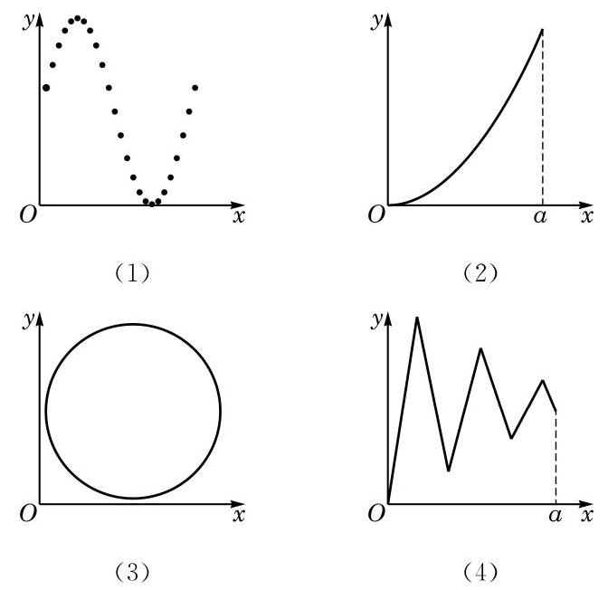
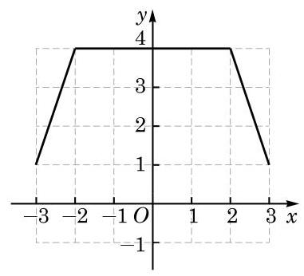
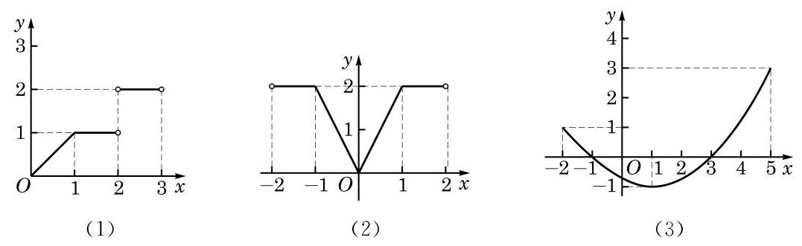

例题 1
例 1 求下列函数的定义域：
(1) ；
(2) ；
(3) 。
学生阅读版 / 沪教版高中数学
必修第一册
第5章函数的概念、性质及应用 · 保留教材主线与原题
教材与正式教参整合
函数是刻画世间万物之间联系的有力工具，借助于函数，可以更好地掌握事物的发展规律，从而深化人们的认识。函数概念的引入，使数学本身也经历了从常量到变量、从有限到无限的发展，从而逐步由初等数学走向高等数学。学好函数，对进一步学习以后的一些数学知识，如三角、微积分等，都是非常必要的。
我们已经学习了正比例函数、反比例函数、一次函数、二次函数、幂函数、指数函数及对数函数等。
例如，对于正比例函数 ，变量 的取值范围是 ，其对应关系是将一个实数对应到它的 2 倍。当变量 时，对应得到唯一的值 ；当变量 时，对应得到唯一的值 ；当变量 取遍一切实数时，对应得到所有的实数 。
又如，对于对数函数 ，变量 的取值范围是 。其对应关系是将 中的实数对应到它的以 3 为底的对数。当变量 时，对应得到唯一的值 ；当变量 时，对应得到唯一的值 ；当变量 取遍一切正数时，对应得到所有的实数 。
在这些例子中，都出现了两个处于变化之中的量，其中一个量之值随另一个量之值的确定而按一定的对应关系唯一确定，从而随着另一个量在一定范围内的变化而相应地发生变化。在用数学工具解决实际问题的过程中，我们还会遇到其他一些类似的情况。由此可抽象出函数的概念。
定义 设 是一个非空的实数集，如果按照某种确定的对应关系 ，使对集合 中的任意给定的 ，都有唯一的实数 与之对应，就称这个对应关系 为集合 上的一个函数（function），记作
对应关系常用小写字母，如 、、 等表示。
在之前学习具体的函数，如幂函数、指数函数及对数函数的时候，我们往往只写出反映函数对应关系的表达式，如 等，而不明显地写出其定义域。此时，函数 的定义域由使得其表达式 有意义的全体实数组成。
例 1 求下列函数的定义域：
(1) ；
(2) ；
(3) 。
例 2 判断下列函数与函数 是否相同，并说明理由：
(1) ；(2) ；
(3) ；(4) 。
例 3 求函数 的值域。
(1) ；
(2) 。
A. 与 ；B. 与 ；
C. 与 ；D. 与 。
(1) ；(2) 。
例如， 等都是用解析法表示的函数。作自由落体运动的物体的位移 与时间 满足 （ 是重力加速度），也是用解析法来表示的函数。
例如，表 5-1 列出了国家统计局网站上发布的 2000 年至 2016 年的国内生产总值（GDP）。
表 5-1 2000 年至 2016 年中国 GDP 变化表
| 年份 | GDP/亿元 | 年份 | GDP/亿元 |
|---|---|---|---|
| 2000 | 100280 | 2009 | 348518 |
| 2001 | 110863 | 2010 | 412119 |
| 2002 | 121717 | 2011 | 487940 |
| 2003 | 137422 | 2012 | 538580 |
| 2004 | 161840 | 2013 | 592963 |
| 2005 | 187319 | 2014 | 641281 |
| 2006 | 219439 | 2015 | 685993 |
| 2007 | 270092 | 2016 | 740061 |
| 2008 | 319245 |
注：未包括中国香港、澳门特别行政区和台湾省的地区生产总值数据。
从上表中可以看出，当自变量年份（2000 至 2016 中的整数）确定时，可按照表中所给出的对应关系，查到该年度我国的 GDP 值作为函数值。该函数的定义域为 ，是一个有限集。
可以看出，如果对定义域 中的实数 ，有 ，那么点 一定在该函数的图像上；反之，如果点 在该函数的图像上，那么必有 ，且 。
常见的一次函数、二次函数、幂函数、指数函数及对数函数的图像，已经在初中和上一章中学过了。
例 4 作出函数 的大致图像。
例 5 以下图形中，哪些是函数的图像，哪些不是？

图 5-1-2
该函数的图像会出现在第二或第四象限吗？为什么？
需要注意的是，绘制在纸上的或计算机屏幕上的函数图像，终究只是大致的图像，它们无法精确地表示一个函数。但大致的图像能够帮助我们直观地了解函数的性质，从而能更好地发现和研究有关函数的性质。"数形结合"的方法是研究函数的重要方法之一。
例 6 某车辆装配车间每 2 h 装配完成一辆车。按照计划，该车间今天生产 8 h。用解析法和图像法分别表示从当天开始生产的时刻起所经过的时间 （单位：h）与装配完成的车辆数 （单位：辆）之间的函数 。
(1) ；(2) ；
(3) ；(4) 。

(第 2 题)
(1) ；(2) ；
(3) ；
(4) 。

(第 3 题)
(1) ；(2) 。
17 世纪是工业生产和科学技术飞速发展的时代，在对天文和航海技术的探索中，科学家们往往需要研究一些运动中的对象，如天体位置、航海中经纬度等。这些问题的实质都是分析研究两个变化中的量之间的关系，并据此描述物体的变化规律。这是函数概念产生和发展的背景。
在 17 世纪早期，意大利科学家伽利略（G. Galilei）、法国数学家笛卡儿（R. Descartes）等在他们的著作中已经注意到了一个变量对另一个变量的依赖关系，但并没有提炼出函数的概念。17 世纪后期，英国数学家牛顿（I. Newton）和德国数学家莱布尼茨（G. W. Leibniz）在分别创立微积分时，考虑的主要对象还是曲线，而牛顿则一直用"流量"一词来表示变量之间的关系。
"函数"（function）一词作为数学概念首先由莱布尼茨引入，用于描述随曲线变化而变化的几何量，如坐标、切线等。此后，瑞士数学家约翰·伯努利（John Bernoulli）首次给出了明确的函数定义，他将函数描述为"由变量和常量以某种方式组成的量"。将函数作为中心概念进行数学研究并作为微积分基础的是瑞士数学家欧拉（L. Euler）。欧拉称变量的函数是一个解析表达式，引入了函数符号 并沿用至今。欧拉还将函数分成代数函数（由四则运算和开根等运算组成的函数）和超越函数（含指数、对数、三角运算等的函数），他也是第一个将正弦、余弦等当作函数处理的数学家。欧拉的很多数学发现基于他的函数观点。在 1755 年，欧拉将函数的定义修改为：如果某些变量以某种方式依赖于另一些变量，即当后面的变量变化时，前面的变量也随之变化，那么称前面的变量是后面变量的函数。
在欧拉时代，人们还是习惯于用表达式来表示函数。随着对微积分研究的深入，18 世纪末 19 世纪初，人们对函数的认识有了进一步提高。德国数学家狄利克雷（P. G. L. Dirichlet）于 1837 年提出了如下的函数的定义：若对于 的每一个值， 总有一个唯一确定的值与之对应，则称 是 的函数。这个定义较清楚地说明了函数概念的本质是对应关系，这个对应关系可以用公式、图像、表格或其他形式表示。这个概念非常清晰，很快被数学家所接受。到 19 世纪 70 年代以后，随着集合论的出现，就有了使用规范的集合语言表述的函数定义，函数概念也就更加精确了。
中文"函数"一词是由我国清代数学家李善兰在 1859 年和英国人伟烈亚力（A. Wylie）合译《代微积拾级》时从英文"function"翻译而来，这一名词一直使用至今。
从上面介绍可以看出，历史上函数概念的建立是从模糊到清晰、从朴素到深入逐步完善的，这符合人们认识事物的一般规律。了解函数概念的发展历史，对于我们更好地理解函数这一重要的数学概念会有很大的帮助。